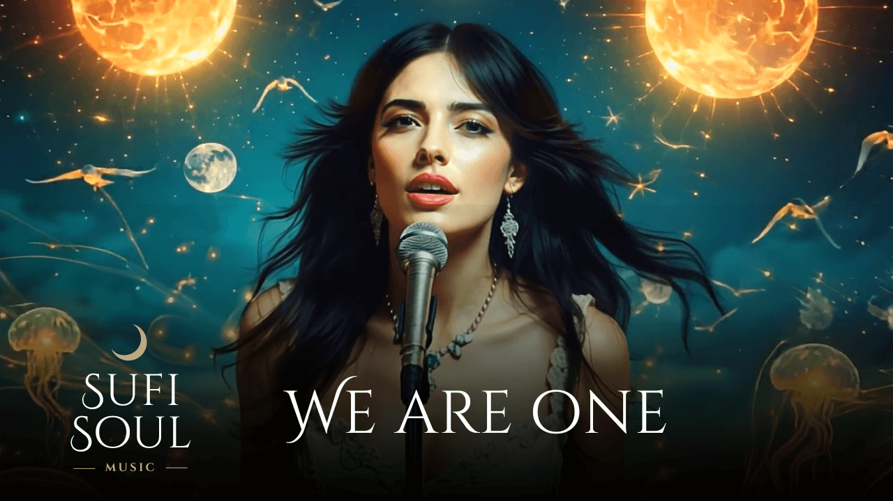
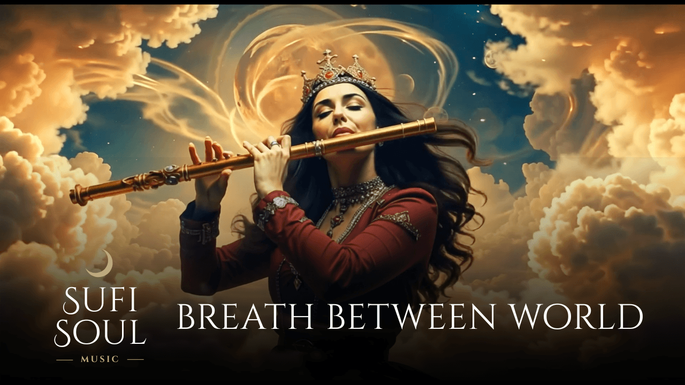

Sufi Soul
We Are One (Original Mix)

Sufi Soul
Breath Between Worlds

Sufi Soul
Healing Frequencies Meditation
DJ · Prodüktör
Sufi Soul
Sufi Soul, İstanbul merkezli bir DJ ve prodüktör kimliği olarak organik house ile ruhsal elektronik müziğin kesişiminde özgün bir ses inşa eder. Hipnotik ritimler Sufi esinli dokularla harmanlanarak antik gelenekler modern kulüp kültürüyle yeniden yorumlanır.
Bu proje, Doğu'nun mistik geleneğini Batı'nın elektronik müzik estetiğiyle buluşturan nadir ses deneyimlerinden biridir.